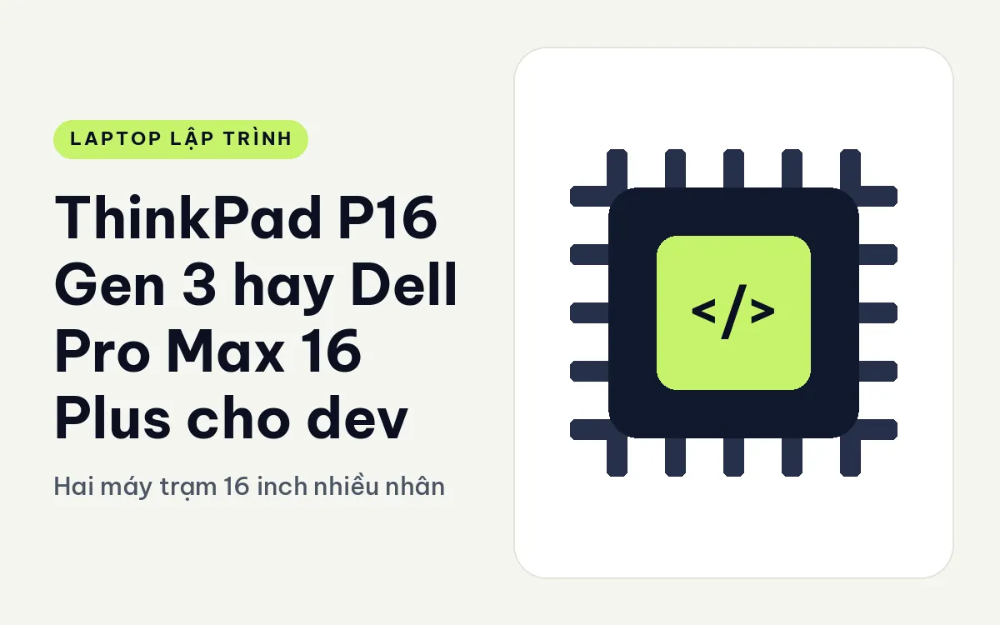
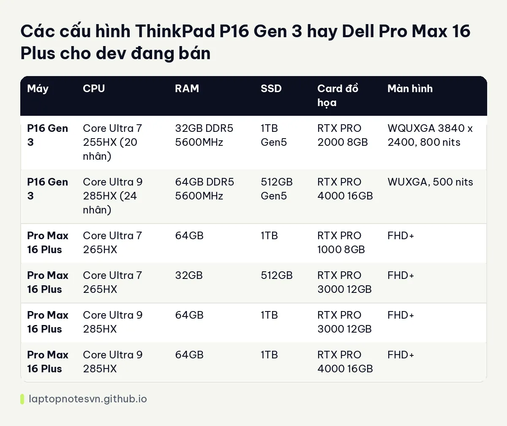

ThinkPad P16 Gen 3 hay Dell Pro Max 16 Plus cho dev - Hai máy trạm 16 inch nhiều nhân

Muốn một máy trạm 16 inch để chạy máy ảo, mô hình và build nặng, bạn sẽ nhanh chóng gặp hai tên này. Cả hai dùng chip dòng HX mạnh, card RTX PRO, và đều nặng hơn 2,5 kg. Sự khác biệt giữa chúng nằm ở khả năng mở rộng RAM, loại màn hình và cách hãng bố trí linh kiện.
Phía Lenovo là ThinkPad P16 Gen 3.
Phía Dell là Dell Pro Max 16 Plus MB16250.
Mang đi làm thì máy nào gọn hơn
P16 Gen 3 nặng 2,54 kg, pin 99,9Wh. Pro Max 16 Plus nặng 2,55 kg, pin 96Wh, kích thước 360 x 258,6 x 30,9 mm. Hai máy gần như ngang nhau về cân nặng, và với con số này, đây là máy để đặt trên bàn, không phải máy để mang đi mỗi ngày.
Cổng của hai máy khá giống nhau: 2 cổng Thunderbolt 5 và 1 cổng Thunderbolt 4, cổng mạng RJ45 2.5G, HDMI. Pro Max 16 Plus còn có 2 USB-A và khe thẻ SD, theo dữ liệu. Bạn cắm được nhiều thiết bị cùng lúc mà không cần hub.
Về nâng cấp, P16 Gen 3 có 4 khe SODIMM, tối đa 192GB RAM, SSD tối đa 12TB. Pro Max 16 Plus dùng DDR5 và có nắp đáy để bảo trì. Dữ liệu Pro Max không ghi số khe RAM, nên nếu bạn cần RAM cực lớn, P16 có thông tin rõ ràng hơn.
Cấu hình ThinkPad P16 Gen 3 so với Dell Pro Max 16 Plus
| Máy | CPU | RAM | SSD | Card đồ họa | Màn hình |
|---|---|---|---|---|---|
| P16 Gen 3 | Core Ultra 7 255HX (20 nhân) | 32GB DDR5 5600MHz | 1TB Gen5 | RTX PRO 2000 8GB | WQUXGA 3840 x 2400, 800 nits |
| P16 Gen 3 | Core Ultra 9 285HX (24 nhân) | 64GB DDR5 5600MHz | 512GB Gen5 | RTX PRO 4000 16GB | WUXGA, 500 nits |
| Pro Max 16 Plus | Core Ultra 7 265HX | 64GB | 1TB | RTX PRO 1000 8GB | FHD+ |
| Pro Max 16 Plus | Core Ultra 7 265HX | 32GB | 512GB | RTX PRO 3000 12GB | FHD+ |
| Pro Max 16 Plus | Core Ultra 9 285HX | 64GB | 1TB | RTX PRO 3000 12GB | FHD+ |
| Pro Max 16 Plus | Core Ultra 9 285HX | 64GB | 1TB | RTX PRO 4000 16GB | FHD+ |
Dell có bốn bản, chia đều theo card từ RTX PRO 1000 đến 4000, và dev có thể chọn mức card vừa túi tiền. Lenovo có hai bản, mỗi bản đẩy vào một kiểu: bản đầu tập trung vào màn 4K sáng 800 nits cùng 1TB SSD, bản sau tập trung vào CPU 24 nhân, card 16GB và 64GB RAM.

Nếu bạn chạy mô hình ngôn ngữ trên card, VRAM là chỉ số quyết định. Hai bản RTX PRO 4000 16GB, một của mỗi hãng, là những bản đáng nhìn nhất. Muốn hiểu RAM hệ thống cần bao nhiêu, xem bài lập trình viên cần bao nhiêu RAM.
Web, mobile hay backend thì nghiêng về máy nào
- Chạy máy ảo, nhiều container, build lớn: cả hai, ưu tiên bản 64GB RAM.
- AI và suy luận cục bộ: bản RTX PRO 4000 16GB của mỗi hãng.
- Dev đồ họa, phát triển game, kỹ thuật: P16 bản màn 4K 800 nits.
- Dev muốn nâng RAM về sau: P16 với 4 khe và trần 192GB.
Nhiệt và tiếng ồn
Với chip HX và card chuyên nghiệp, quạt chắc chắn lên tiếng khi tải nặng. Dữ liệu không đo độ ồn hay nhiệt độ nên bài này không đưa con số. Thân dày hơn 30 mm của Pro Max 16 Plus và hệ tản nhiệt lớn của P16 đều nhằm giữ hiệu năng ổn định khi chạy lâu. Nếu bạn làm việc ở không gian yên tĩnh, hãy nghe thử máy thật.
Chọn card theo việc chứ không theo tên
Dòng RTX PRO có nhiều bậc, từ 1000 đến 4000, VRAM tăng dần từ 8GB lên 12GB rồi 16GB. Với dev, VRAM là con số cần nhìn đầu tiên khi chạy mô hình hoặc dựng cảnh. Nếu mô hình của bạn không vừa VRAM, nó sẽ tràn sang RAM hệ thống và chậm đi rõ rệt.
Một quy tắc đơn giản: chỉ cần một card 8GB nếu bạn thử mô hình nhỏ hoặc làm đồ họa 3D vừa phải. Cần 12GB nếu chạy mô hình cỡ trung. Cần 16GB nếu muốn thoải mái hơn. Nhưng nếu việc của bạn chỉ là web hay backend, các card này là dư thừa, và một máy gọn hơn sẽ đáng tiền hơn.
Cũng cần nhớ rằng card chuyên nghiệp đắt hơn card GeForce cùng sức mạnh thô, vì bạn trả thêm cho driver được chứng nhận và độ ổn định khi làm việc dài. Nếu không dùng phần mềm kỹ thuật cần chứng nhận, hãy cân nhắc các máy dùng GeForce như dòng T1G.
Khi nào lấy ThinkPad P16 Gen 3, khi nào lấy Dell Pro Max 16 Plus
Chọn P16 Gen 3 nếu bạn cần RAM nâng đến 192GB, màn 4K sáng hoặc ổ lưu trữ lớn. Bài P16 Gen 3 cho lập trình có thêm ghi chú.
Chọn Pro Max 16 Plus nếu bạn muốn nhiều mức card để chọn, có khe SD, USB-A và nắp đáy dễ bảo trì. Đọc thêm ở Pro Max 16 Plus cho lập trình.
Gợi ý chọn nhanh: ưu tiên mở rộng thì P16, ưu tiên nhiều lựa chọn card thì Pro Max 16 Plus.
Đăng ngày 09/11/2026